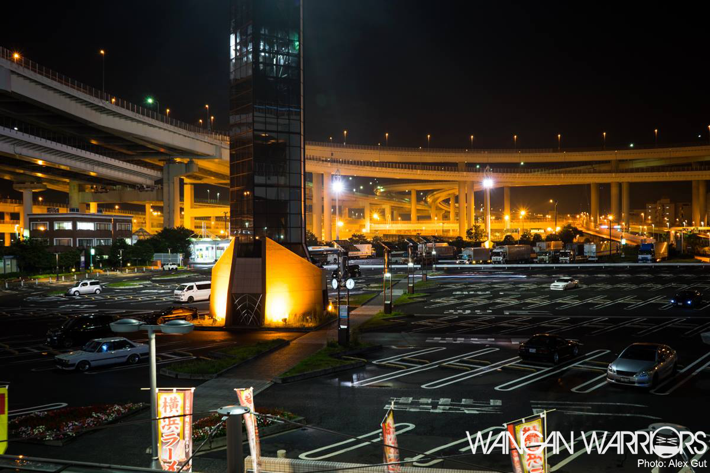

What is JDM?
JDM stands for Japanese Domestic Market.
JDM refers to any vehicle that was produced for the Japanese domestic vehicle market
However, JDM can also be mean a car simply made by a Japanese manufacturer.
There are many conflicting opinions about the true meaning of JDM but at the end of the day, it is more than just an acronym.
IT'S A CULTURE.
Whether you're driving through the streets of the UK in a Honda Integra DC5 Type R.
Or cruising down the coast of Western Australia in your Nissan GTI-R.
You have something in common,
a passion for Japanese Engineering and the amazing cars that have come out of this country.
The dream experience for every JDM fan is cruising up with your crew to the World Famous Daikoku Parking Area.
Parking your R34 Nissan Skyline GTR right in the middle for everyone to see.
Then taking in the sights of the greatest Car Meet of all time.
